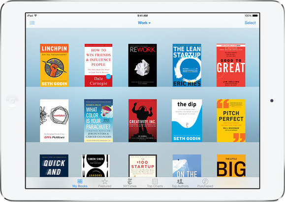
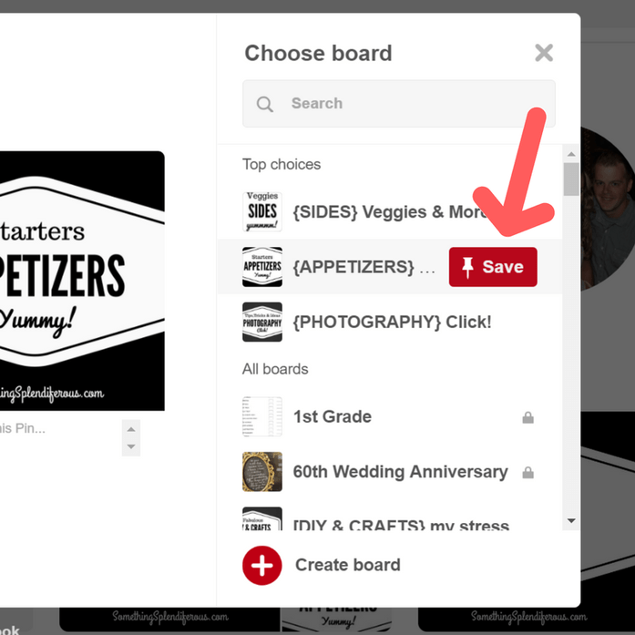
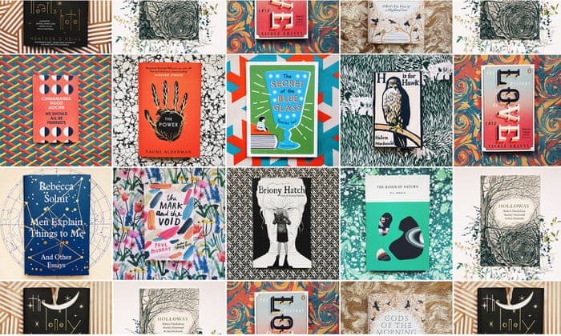

PINTEREACH- Envision Your Research
As a researcher, it's difficult to keep track of articles you want to read later. Pintereach helps you research by enabling you to save and organize articles in to categories to read later.
Pintereach is a tool that helps you visually organize your research.

Add, Remove, & Organize Articles
Simply click Add Article, paste the url of the article you want to save, give it a title, and choose a research board to pin it to.
You can move articles to your other research boards with a simple drag and drop.
Search Bar
Can't remember what research board you pinned an article? No problem1 Simply search for the article title in the search bar. You can even find articles in other researcher's boards.

Ready to Go, Wherever You Are

Connect with Researchers Around the World
Follow other Researchers and get updated when they update their research boards.
"I have always wanted to have an app where I can see my articles laid out in front of me."
Amir Yunas - Researcher & Developer
"I have always wanted to have an app where I can see my articles laid out in front of me."
Amir Yunas - Researcher & Developer
"I have always wanted to have an app where I can see my articles laid out in front of me."
Amir Yunas - Researcher & Developer
Don't let reading overwhelm you. See it. Organize it with PINTEREACH
Visualize Your Research, All in One Spot


Pintereach is a project belonging to the Students of Lambda School. Lambda School provided the project description, and a small team of 4 Students in the Lambda Curriculum got together to build the app as part of their Build Week Projet in March, 2019.
Founded in 2016, Lambda School is a 9 month Software Engineering program, also known as an full-time coding bootcamp. Lambda prepares students for a full time career in Software Engineering. Oh, and if the graduate of the program doesn't land a job, the tuition for Lambda school is absolutely free.